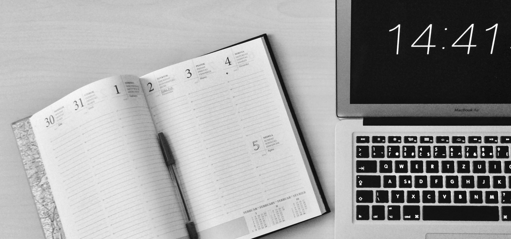

<div id="single-portfolio">
	<div id="portfolio-details" class="container">
		<a class="close-folio-item" href="#"><i class="fa fa-times"></i></a>
		
		<div class="row">
			<div class="col-sm-9">
				<div class="project-info">
					<h3>Who has time for peace anymore?</h3>
					<p>Time Peace, a startup, wants to make it possible for you to experience some tranquility everyday, and with their simple tracking system you can assign some time everyday to pursue activities that let you kick up your feet. They approached us wanting an intuitive design for their tracking system that would allow users to navigate, schedule, and track their time. Challenge accepted.</p>
					<p>Looking at other tracking systems on the market for opportunities, we started sketching ideas an intuitive design to address market weaknesses. We met with potential users and gathered information to ensure we would produce a winning design to make users say, WOW! After sketching and mockups, we started prototyping, user testing, and iterating. </p>
                    <p>The final design we produced was everything the Time Peace team hoped. It was simple and aesthetically pleasing.</p>
				</div>
			</div>
			<div class="col-sm-3">
				<div class="project-details">
					<h3>Project Details</h3>
					<p><span>Client: </span>Time Peace</p>
					<p><span>Date:</span> 15 July 2016</p>
					<p><span>Tag:</span> User Research, Iterative Design, Prototyping</p>
				</div>  
			</div>
		</div>
	</div>
</div>